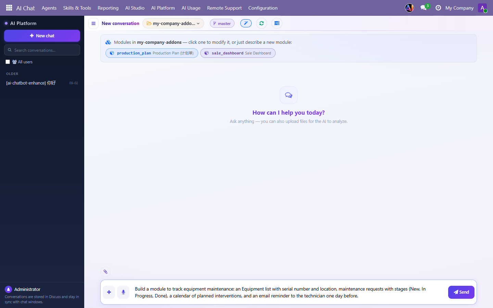
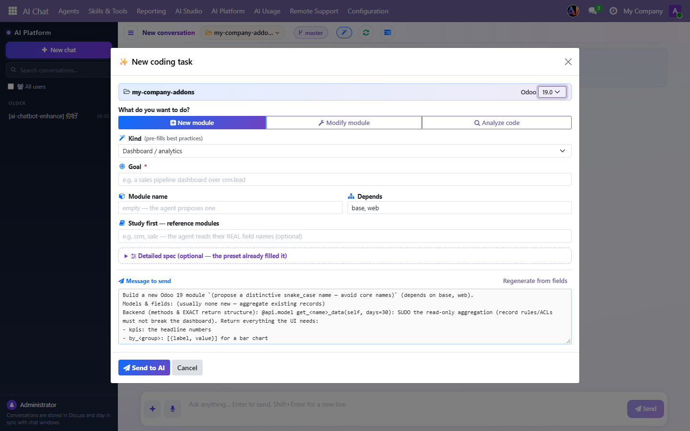
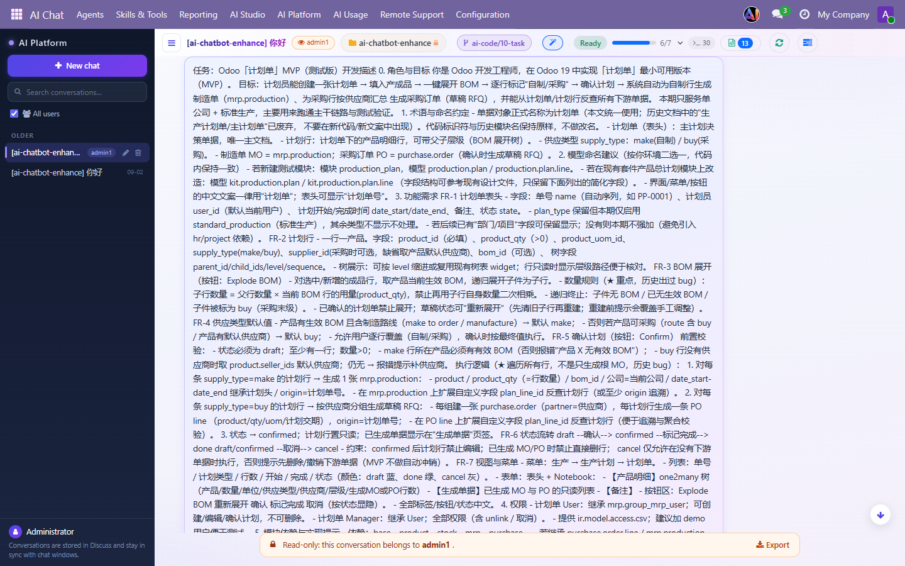
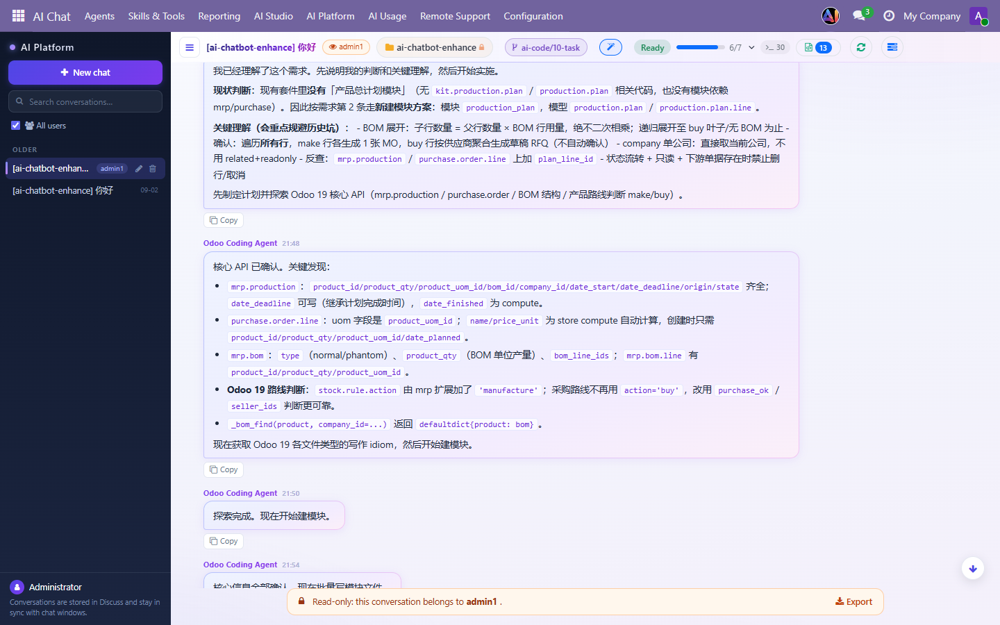
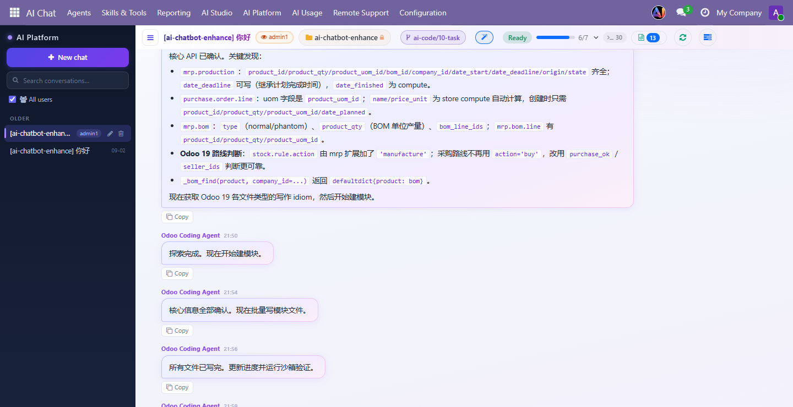
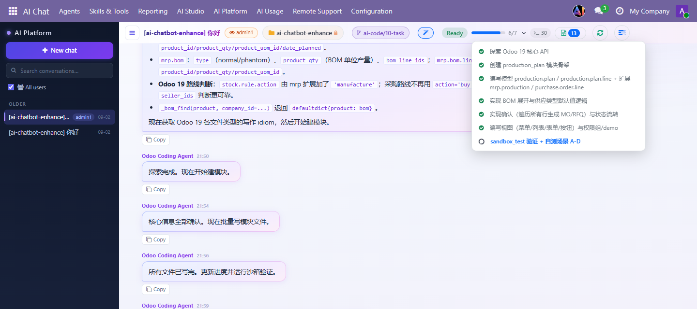
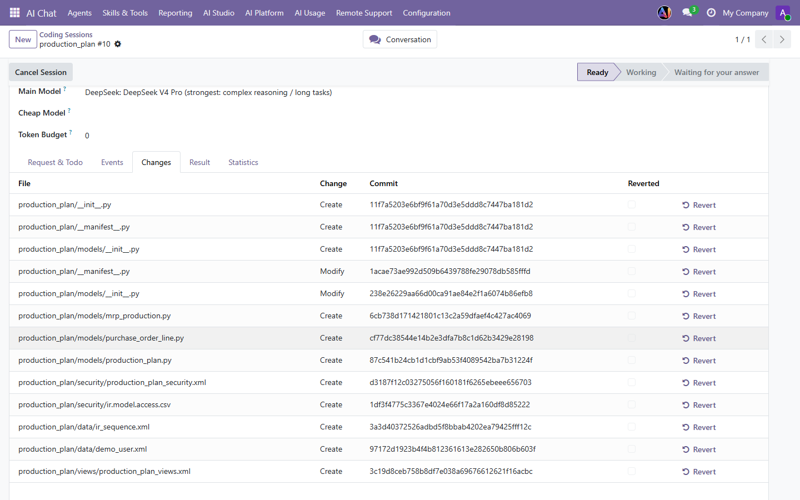
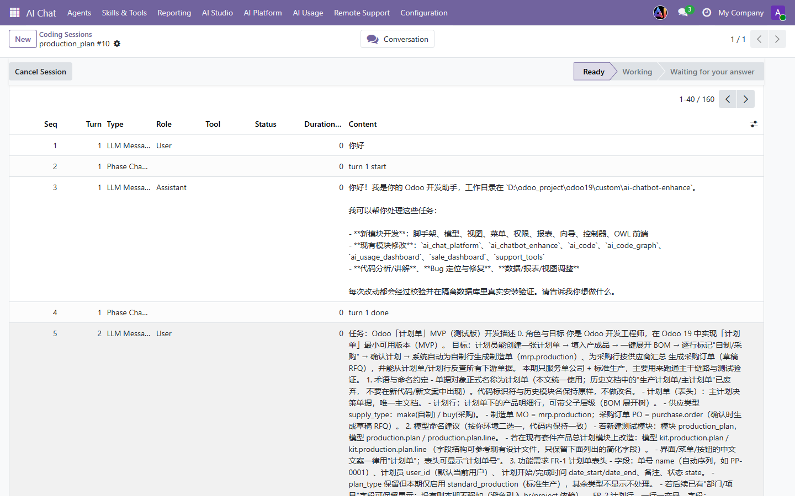
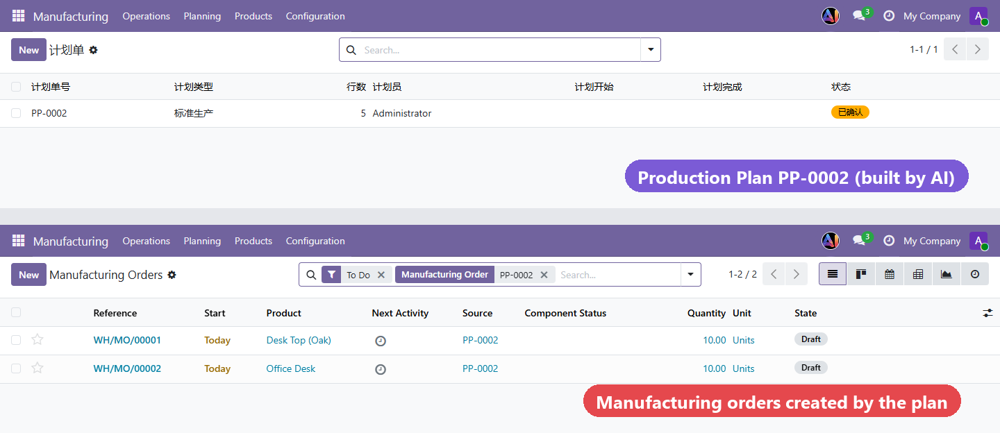
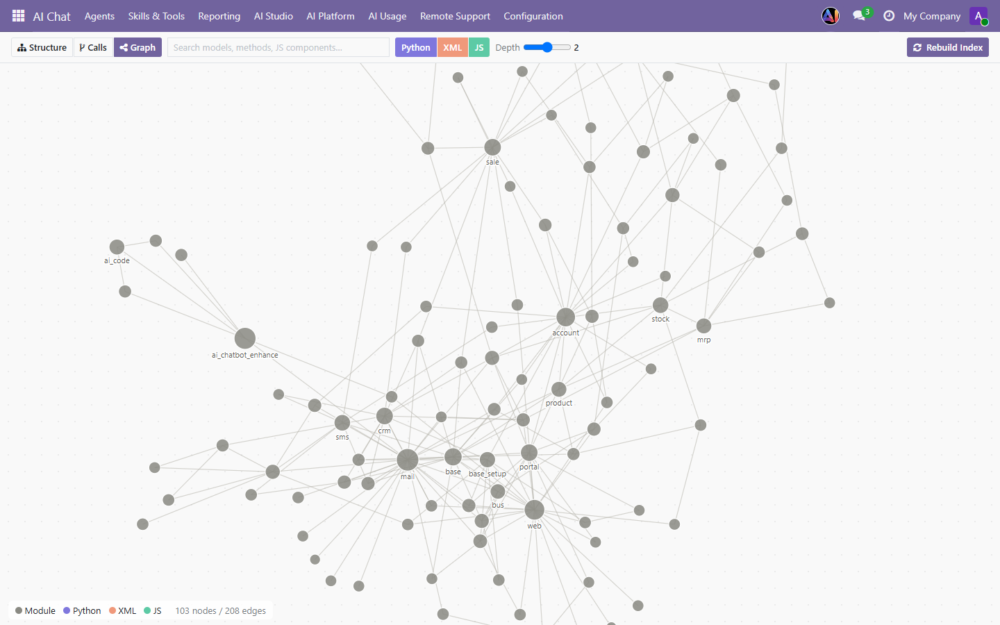

<section style="font-family:'Inter','Segoe UI',Roboto,Helvetica,Arial,sans-serif;color:#1F2937;background:#FFFFFF;">
<div class="container" style="max-width:1140px;margin:0 auto;padding:0 16px;">

    <!-- ============ BADGES ============ -->
    <div style="display:flex;justify-content:space-between;flex-wrap:wrap;align-items:center;border-bottom:1px solid #E5E7EB;padding:14px 0;">
        <div style="display:flex;flex-wrap:wrap;">
            <span style="background:#017E84;color:#fff;font-size:13px;font-weight:600;padding:5px 18px;margin:3px;border-radius:50px;">Community</span>
            <span style="background:#374151;color:#fff;font-size:13px;font-weight:600;padding:5px 18px;margin:3px;border-radius:50px;">On-Premise</span>
        </div>
        <div style="display:flex;flex-wrap:wrap;">
            <span style="background:#875A7B;color:#fff;font-size:13px;font-weight:600;padding:5px 18px;margin:3px;border-radius:50px;">Odoo 19</span>
        </div>
    </div>

    <!-- ============ HERO ============ -->
    <div style="text-align:center;padding:64px 0 32px;">
        <div style="display:inline-block;background:#EEF0FF;color:#5B4BD6;font-weight:700;font-size:13px;letter-spacing:1px;padding:6px 16px;border-radius:50px;margin-bottom:18px;">AI CODING AGENT FOR ODOO 19</div>
        <h1 style="font-size:46px;font-weight:800;line-height:1.15;color:#111827;margin:0 0 18px;">Describe what you need.<br/>The AI builds your Odoo module.</h1>
        <h2 style="font-size:24px;font-weight:600;line-height:1.45;color:#374151;margin:0 auto 18px;max-width:900px;">
            You don&rsquo;t need to know Python, XML or JavaScript. Write your requirement in plain words &mdash;
            in English, Chinese or any language &mdash; and an Odoo-specialist AI agent <span style="color:#5B4BD6;">plans</span>,
            <span style="color:#E5484D;">writes</span> and <span style="color:#017E84;">tests</span> a real Odoo module for you, right inside Odoo.
        </h2>
        <p style="font-size:17px;line-height:1.7;color:#6B7280;max-width:840px;margin:0 auto 30px;">
            Business owners, consultants and functional teams can finally build the custom features they need &mdash;
            new apps, new fields, dashboards, approval flows &mdash; without waiting weeks for a developer.
            Every change is saved as a git checkpoint you can undo in one click.
        </p>

        <div style="display:flex;flex-wrap:wrap;justify-content:center;margin-bottom:36px;">
            <div style="background:#F9FAFB;border:1px solid #E5E7EB;border-radius:14px;padding:16px 22px;margin:6px;min-width:190px;">
                <div style="font-size:28px;font-weight:800;color:#5B4BD6;">0</div>
                <div style="font-size:14px;color:#6B7280;">lines of code to write yourself</div>
            </div>
            <div style="background:#F9FAFB;border:1px solid #E5E7EB;border-radius:14px;padding:16px 22px;margin:6px;min-width:190px;">
                <div style="font-size:28px;font-weight:800;color:#E5484D;">31</div>
                <div style="font-size:14px;color:#6B7280;">built-in coding tools</div>
            </div>
            <div style="background:#F9FAFB;border:1px solid #E5E7EB;border-radius:14px;padding:16px 22px;margin:6px;min-width:190px;">
                <div style="font-size:28px;font-weight:800;color:#017E84;">1 click</div>
                <div style="font-size:14px;color:#6B7280;">to revert any step</div>
            </div>
            <div style="background:#F9FAFB;border:1px solid #E5E7EB;border-radius:14px;padding:16px 22px;margin:6px;min-width:190px;">
                <div style="font-size:28px;font-weight:800;color:#F0905E;">Any</div>
                <div style="font-size:14px;color:#6B7280;">language you write in</div>
            </div>
        </div>

        
        <p style="font-size:14px;color:#9CA3AF;margin-top:12px;">Pick a folder, type what you want in plain words, press Send. That&rsquo;s the whole user interface.</p>
    </div>

    <!-- ============ HOW IT WORKS ============ -->
    <div style="padding:30px 0 40px;">
        <h2 style="text-align:center;font-size:32px;font-weight:800;color:#111827;margin:0 0 28px;">From idea to installed module in 5 steps</h2>
        <div style="display:flex;flex-wrap:wrap;margin:0 -8px;">
            <div style="flex:1 1 160px;margin:6px;text-align:center;padding:18px 14px;border:1px solid #E5E7EB;border-radius:14px;">
                <div style="width:44px;height:44px;line-height:44px;border-radius:50%;background:#5BB8F5;color:#fff;font-weight:800;font-size:19px;margin:0 auto 10px;">1</div>
                <div style="font-weight:700;font-size:16px;">You describe</div>
                <div style="font-size:14px;color:#6B7280;margin-top:6px;">Type your need in chat, paste a requirement document, or use the guided form.</div></div>
            <div style="flex:1 1 160px;margin:6px;text-align:center;padding:18px 14px;border:1px solid #E5E7EB;border-radius:14px;">
                <div style="width:44px;height:44px;line-height:44px;border-radius:50%;background:#7B5BD6;color:#fff;font-weight:800;font-size:19px;margin:0 auto 10px;">2</div>
                <div style="font-weight:700;font-size:16px;">AI plans</div>
                <div style="font-size:14px;color:#6B7280;margin-top:6px;">It restates your need and creates a todo list you can watch live.</div></div>
            <div style="flex:1 1 160px;margin:6px;text-align:center;padding:18px 14px;border:1px solid #E5E7EB;border-radius:14px;">
                <div style="width:44px;height:44px;line-height:44px;border-radius:50%;background:#B05BB0;color:#fff;font-weight:800;font-size:19px;margin:0 auto 10px;">3</div>
                <div style="font-weight:700;font-size:16px;">AI reads &amp; writes</div>
                <div style="font-size:14px;color:#6B7280;margin-top:6px;">It studies the real Odoo code first, then writes models, views, menus and security.</div></div>
            <div style="flex:1 1 160px;margin:6px;text-align:center;padding:18px 14px;border:1px solid #E5E7EB;border-radius:14px;">
                <div style="width:44px;height:44px;line-height:44px;border-radius:50%;background:#F0905E;color:#fff;font-weight:800;font-size:19px;margin:0 auto 10px;">4</div>
                <div style="font-weight:700;font-size:16px;">AI tests</div>
                <div style="font-size:14px;color:#6B7280;margin-top:6px;">It installs the module in an isolated sandbox database and fixes its own errors.</div></div>
            <div style="flex:1 1 160px;margin:6px;text-align:center;padding:18px 14px;border:1px solid #E5E7EB;border-radius:14px;">
                <div style="width:44px;height:44px;line-height:44px;border-radius:50%;background:#E5484D;color:#fff;font-weight:800;font-size:19px;margin:0 auto 10px;">5</div>
                <div style="font-weight:700;font-size:16px;">You install</div>
                <div style="font-size:14px;color:#6B7280;margin-top:6px;">It reports honestly what was verified &mdash; then you install it like any Odoo app.</div></div>
        </div>
    </div>

    <!-- ============ 01 DESCRIBE ============ -->
    <div style="padding:36px 0;border-top:1px solid #F3F4F6;">
        <div style="font-size:13px;font-weight:700;color:#5B4BD6;letter-spacing:1px;">01 &middot; NO CODING SKILLS NEEDED</div>
        <h3 style="font-size:26px;font-weight:800;color:#111827;margin:6px 0 10px;">Not sure how to describe it? Use the guided form</h3>
        <p style="font-size:16px;line-height:1.7;color:#4B5563;margin:0 0 18px;">Choose <b>New module</b>, <b>Modify module</b> or <b>Analyze code</b>, pick the kind of feature (dashboard, workflow, report&hellip;) and write your goal. Best practices for that kind are pre-filled, and you can see exactly what will be sent to the AI before you click <b>Send to AI</b>.</p>
        
    </div>

    <!-- ============ 02 REAL EXAMPLE ============ -->
    <div style="padding:36px 0;border-top:1px solid #F3F4F6;">
        <div style="font-size:13px;font-weight:700;color:#5B4BD6;letter-spacing:1px;">02 &middot; A REAL EXAMPLE</div>
        <h3 style="font-size:26px;font-weight:800;color:#111827;margin:6px 0 10px;">A customer pasted a requirement in Chinese &mdash; the agent took it from there</h3>
        <p style="font-size:16px;line-height:1.7;color:#4B5563;margin:0 0 18px;">The request: a <b>Production Plan</b> app &ndash; create a plan, add finished products, explode the bill of materials in one click, mark each line &ldquo;make&rdquo; or &ldquo;buy&rdquo;, and on confirmation automatically create manufacturing orders and purchase orders grouped by vendor. Written as a business document, not as code.</p>
        
        <p style="font-size:16px;line-height:1.7;color:#4B5563;margin:22px 0 18px;">The agent first explains how it understood the request and which approach it chose, then checks the real Odoo 19 APIs it needs (manufacturing orders, purchase lines, BOMs, routes) before writing anything. It answers in the language of your Odoo interface.</p>
        <div style="display:flex;flex-wrap:wrap;margin:0 -7px;">
            <div style="flex:1 1 460px;margin:7px;"><p style="font-size:13px;color:#9CA3AF;margin-top:6px;">The agent restates the requirement and its plan.</p></div>
            <div style="flex:1 1 460px;margin:7px;"><p style="font-size:13px;color:#9CA3AF;margin-top:6px;">It confirms the real Odoo APIs, then writes the module files.</p></div>
        </div>
    </div>

    <!-- ============ 03 TODO ============ -->
    <div style="padding:36px 0;border-top:1px solid #F3F4F6;">
        <div style="font-size:13px;font-weight:700;color:#5B4BD6;letter-spacing:1px;">03 &middot; ALWAYS KNOW WHAT IT IS DOING</div>
        <h3 style="font-size:26px;font-weight:800;color:#111827;margin:6px 0 10px;">Live todo list, activity feed and a Stop button</h3>
        <p style="font-size:16px;line-height:1.7;color:#4B5563;margin:0 0 18px;">The plan appears as a todo list with a progress bar that updates in real time. Each tool call shows up in the activity feed with its duration, answers stream in word by word, and you can stop the agent after the current step at any moment. If it is unsure, it asks you with clickable options instead of guessing.</p>
        
    </div>

    <!-- ============ 04 SAFETY ============ -->
    <div style="padding:36px 0;border-top:1px solid #F3F4F6;">
        <div style="font-size:13px;font-weight:700;color:#5B4BD6;letter-spacing:1px;">04 &middot; SAFE BY DESIGN</div>
        <h3 style="font-size:26px;font-weight:800;color:#111827;margin:6px 0 10px;">Every step is a git checkpoint &ndash; undo anything in one click</h3>
        <p style="font-size:16px;line-height:1.7;color:#4B5563;margin:0 0 18px;">Each file the agent creates or modifies is committed to its own git branch. The <b>Changes</b> tab lists every file with its commit, and the <b>Revert</b> button rolls a step back instantly. The full event log keeps every tool call and result for review.</p>
        
        <div style="display:flex;flex-wrap:wrap;margin:18px -8px 0;">
            <div style="flex:1 1 250px;margin:8px;background:#F9FAFB;border-radius:12px;padding:16px;font-size:14px;line-height:1.6;color:#4B5563;"><b style="color:#111827;">Only your folders</b><br/>the agent can only write inside the addons folders you allow &ndash; never Odoo&rsquo;s own source.</div>
            <div style="flex:1 1 250px;margin:8px;background:#F9FAFB;border-radius:12px;padding:16px;font-size:14px;line-height:1.6;color:#4B5563;"><b style="color:#111827;">Read before edit</b><br/>it is not allowed to change a file it has not read in the current turn.</div>
            <div style="flex:1 1 250px;margin:8px;background:#F9FAFB;border-radius:12px;padding:16px;font-size:14px;line-height:1.6;color:#4B5563;"><b style="color:#111827;">Checked before saving</b><br/>Python, XML and Odoo-version rules are validated before a file is written.</div>
            <div style="flex:1 1 250px;margin:8px;background:#F9FAFB;border-radius:12px;padding:16px;font-size:14px;line-height:1.6;color:#4B5563;"><b style="color:#111827;">Sandbox, not production</b><br/>tests run in a separate sandbox database, so your live data is never touched.</div>
            <div style="flex:1 1 250px;margin:8px;background:#F9FAFB;border-radius:12px;padding:16px;font-size:14px;line-height:1.6;color:#4B5563;"><b style="color:#111827;">You approve commands</b><br/>optional shell commands need your click on an approval card; dangerous ones are refused.</div>
            <div style="flex:1 1 250px;margin:8px;background:#F9FAFB;border-radius:12px;padding:16px;font-size:14px;line-height:1.6;color:#4B5563;"><b style="color:#111827;">Honest reports</b><br/>the final summary lists what was verified and what was not run &ndash; no false &ldquo;all green&rdquo;.</div>
        </div>
        
    </div>

    <!-- ============ 05 RESULT ============ -->
    <div style="padding:36px 0;border-top:1px solid #F3F4F6;">
        <div style="font-size:13px;font-weight:700;color:#5B4BD6;letter-spacing:1px;">05 &middot; REAL ODOO MODULES</div>
        <h3 style="font-size:26px;font-weight:800;color:#111827;margin:6px 0 10px;">The result is a normal Odoo module you own</h3>
        <p style="font-size:16px;line-height:1.7;color:#4B5563;margin:0 0 18px;">Below: the Production Plan module from the example above, installed. A plan for 10 office desks exploded a 3-level bill of materials, and on confirmation created the manufacturing orders and one purchase order per vendor &ndash; linked back to plan PP-0002. The code is plain Odoo Python/XML in your own folder: keep it, change it, or give it to a developer.</p>
        
    </div>

    <!-- ============ 06 GRAPH ============ -->
    <div style="padding:36px 0;border-top:1px solid #F3F4F6;">
        <div style="font-size:13px;font-weight:700;color:#5B4BD6;letter-spacing:1px;">06 &middot; IT UNDERSTANDS YOUR SYSTEM</div>
        <h3 style="font-size:26px;font-weight:800;color:#111827;margin:6px 0 10px;">A knowledge graph of your Odoo code</h3>
        <p style="font-size:16px;line-height:1.7;color:#4B5563;margin:0 0 18px;">The included <b>AI Code Graph</b> maps models, fields, views, menus and JavaScript components with their relationships. The agent uses it to see what a change will affect before touching anything &ndash; and you can explore it yourself as an interactive graph.</p>
        
    </div>

    <!-- ============ WHAT YOU CAN BUILD ============ -->
    <div style="padding:36px 0;border-top:1px solid #F3F4F6;">
        <h2 style="text-align:center;font-size:30px;font-weight:800;color:#111827;margin:0 0 24px;">What can you ask for?</h2>
        <div style="display:flex;flex-wrap:wrap;margin:0 -8px;">
            <div style="flex:1 1 300px;margin:8px;border:1px solid #E5E7EB;border-radius:14px;padding:18px;font-size:15px;line-height:1.6;color:#374151;">&ldquo;Add a <b>Delivery Window</b> field to sales orders and show it on the delivery slip.&rdquo;</div>
            <div style="flex:1 1 300px;margin:8px;border:1px solid #E5E7EB;border-radius:14px;padding:18px;font-size:15px;line-height:1.6;color:#374151;">&ldquo;Create an <b>Equipment Maintenance</b> app with stages, a calendar and email reminders.&rdquo;</div>
            <div style="flex:1 1 300px;margin:8px;border:1px solid #E5E7EB;border-radius:14px;padding:18px;font-size:15px;line-height:1.6;color:#374151;">&ldquo;Build a <b>sales dashboard</b> with today&rsquo;s revenue, order count and a trend chart.&rdquo;</div>
            <div style="flex:1 1 300px;margin:8px;border:1px solid #E5E7EB;border-radius:14px;padding:18px;font-size:15px;line-height:1.6;color:#374151;">&ldquo;Purchase orders above $5,000 need <b>manager approval</b> before they can be confirmed.&rdquo;</div>
            <div style="flex:1 1 300px;margin:8px;border:1px solid #E5E7EB;border-radius:14px;padding:18px;font-size:15px;line-height:1.6;color:#374151;">&ldquo;Explain how the <b>stock valuation</b> in this custom module works.&rdquo; <span style="color:#9CA3AF;">(Analyze mode &ndash; no changes)</span></div>
            <div style="flex:1 1 300px;margin:8px;border:1px solid #E5E7EB;border-radius:14px;padding:18px;font-size:15px;line-height:1.6;color:#374151;">&ldquo;Fix the error when I open the <b>contract form</b> in my module.&rdquo;</div>
        </div>
    </div>

    <!-- ============ TECH ============ -->
    <div style="padding:20px 0 30px;">
        <div style="background:#F9FAFB;border-radius:16px;padding:28px;">
            <h3 style="font-size:22px;font-weight:800;color:#111827;margin:0 0 14px;">Under the hood</h3>
            <div style="display:flex;flex-wrap:wrap;font-size:15px;line-height:1.9;color:#374151;">
                <div style="flex:1 1 400px;padding-right:16px;">
                    &#9679; Single tool-using agent loop with 31 tools: search, read, outline, write, multi-edit, scaffold, sandbox test, git<br/>
                    &#9679; Odoo 19 knowledge base: version-filtered pitfalls and 46 code idioms checked against Odoo 19 source<br/>
                    &#9679; Sandbox test: static checks &rarr; isolated database install &rarr; runtime smoke test &rarr; optional unit tests<br/>
                    &#9679; Remembers lessons per project folder and reuses them in the next session
                </div>
                <div style="flex:1 1 400px;">
                    &#9679; Bring your own AI model: DeepSeek, OpenAI, Google Gemini, Alibaba Qwen, Kimi, Anthropic Claude<br/>
                    &#9679; Smart context compression keeps long sessions within the model&rsquo;s limits<br/>
                    &#9679; Token-by-token streaming and per-session token and cost statistics<br/>
                    &#9679; Built on AI Chatbot Enhance, AI Platform and AI Code Graph (installed automatically)
                </div>
            </div>
        </div>
    </div>

    <!-- ============ REQUIREMENTS ============ -->
    <div style="padding:0 0 30px;">
        <div style="background:#FFFBEB;border:1px solid #FDE68A;border-radius:14px;padding:20px 24px;font-size:15px;line-height:1.7;color:#78350F;">
            <b>Requirements:</b> Odoo 19 <b>on-premise / self-hosted</b>, where the agent can write to an addons folder on your server and git is installed.
            You need an API key from one of the supported AI providers; AI usage is billed by your provider directly.
            Requires the <b>AI Chatbot Enhance</b> module (its price is included in the total shown on this page).
            Not available on Odoo Online.
        </div>
    </div>

    <!-- ============ FAQ ============ -->
    <div style="padding:10px 0 40px;">
        <h2 style="text-align:center;font-size:32px;font-weight:800;color:#111827;margin:0 0 26px;">FAQ</h2>
        <div style="border:1px solid #E5E7EB;border-radius:12px;padding:18px 20px;margin-bottom:12px;">
            <div style="font-weight:700;font-size:16px;color:#111827;">Do I really need no programming knowledge?</div>
            <div style="font-size:15px;color:#4B5563;line-height:1.7;margin-top:6px;">You describe the business need; the agent decides the models, fields, views and security, writes the code and tests it. Knowing how your business process should work is what matters. For complex projects, a quick review by someone who knows Odoo is still a good idea.</div></div>
        <div style="border:1px solid #E5E7EB;border-radius:12px;padding:18px 20px;margin-bottom:12px;">
            <div style="font-weight:700;font-size:16px;color:#111827;">How much does the AI usage cost?</div>
            <div style="font-size:15px;color:#4B5563;line-height:1.7;margin-top:6px;">You pay your AI provider directly for the tokens used, and each session shows its token count and cost. In our own test with DeepSeek, a small new module (4 todo items, 6 files, sandbox install and smoke test) took 93 seconds and cost about $0.03. Larger modules cost more.</div></div>
        <div style="border:1px solid #E5E7EB;border-radius:12px;padding:18px 20px;margin-bottom:12px;">
            <div style="font-weight:700;font-size:16px;color:#111827;">Can it break my running Odoo?</div>
            <div style="font-size:15px;color:#4B5563;line-height:1.7;margin-top:6px;">The agent only writes into the folders you allow, every step is a git commit you can revert, and its tests run in a separate sandbox database. A new module only affects your live database once you install it yourself.</div></div>
        <div style="border:1px solid #E5E7EB;border-radius:12px;padding:18px 20px;margin-bottom:12px;">
            <div style="font-weight:700;font-size:16px;color:#111827;">Can it change existing modules too?</div>
            <div style="font-size:15px;color:#4B5563;line-height:1.7;margin-top:6px;">Yes. Choose a folder and the agent lists its modules &ndash; click one to modify it, ask it to fix a bug, or use Analyze mode to have the code explained without changing anything.</div></div>
        <div style="border:1px solid #E5E7EB;border-radius:12px;padding:18px 20px;margin-bottom:12px;">
            <div style="font-weight:700;font-size:16px;color:#111827;">Which language can I write in?</div>
            <div style="font-size:15px;color:#4B5563;line-height:1.7;margin-top:6px;">Any language your AI model understands. The agent replies in the language of your Odoo interface. The interface itself is available in English and Simplified Chinese.</div></div>
    </div>

    <!-- ============ CONTACT ============ -->
    <div style="text-align:center;padding:40px 20px;margin-bottom:40px;background:linear-gradient(135deg,#111327 0%,#5B4BD6 60%,#E5484D 100%);border-radius:18px;color:#fff;">
        <h2 style="font-size:28px;font-weight:800;margin:0 0 10px;color:#fff;">Questions before you buy?</h2>
        <p style="font-size:17px;margin:0 0 14px;color:#EDEBFF;">We are happy to help with installation and your first module.</p>
        <p style="font-size:18px;font-weight:700;margin:0;color:#fff;">&#9993; 18438630181@163.com</p>
    </div>

</div>
</section>
